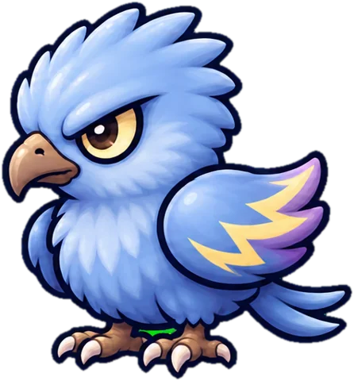

 Electric
Electric Wind
WindTap a stage to read its story.
Sparrow is a plump blue-grey sparrow-chick with ruffled feathers, a sharp little beak, and a bright yellow lightning-bolt marking on each wing that already crackles with faint static. It perches on Storm Spire outcroppings and leans into the wind with eyes closed, reading it. Its flaps are still short and uncertain but carry a tiny electric buzz each beat. Other fledglings at the Spire keep distance, having been accidentally zapped during roosting. Sparrow doesn't seem to mind the solitude - it prefers the highest ledge it can reach, where the wind is strongest and most interesting.
Field note: Sparrow's wing-zap at this stage is not strong enough to cause harm but is precisely strong enough to knock a small insect off course in flight - it uses this ability to redirect prey toward its beak.
Dragon Spire. Sparrow and its family are found in the Dragon Spire. See everyone who lives there.
Share a Bond Food that matches its types to become friends. Sparrow loves:
A Bond Food is not a trick. It joins your spirit with the Kimuro's spirit, and only when it chooses you.
Print the Kimuro adventure packs: mazes, cards, a board game and Bond Mark medals.
See the printable packs